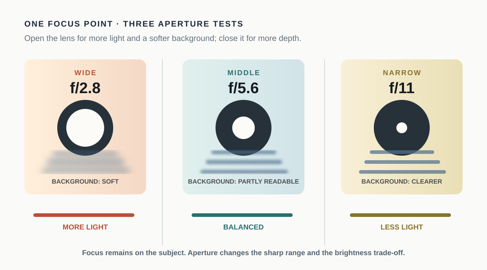

Aperture is easier to understand when you treat it as two linked questions: how much light should enter, and how much of the scene should appear acceptably sharp? The setting is written as an f-number, but the number behaves in the opposite direction from what many beginners expect. A lower f-number means a wider opening; a higher f-number means a narrower opening.
The practical starting rule is simple: use a wider aperture when you want more light or a softer background, and use a narrower aperture when you want more depth of field. That is a starting point, not a guarantee. Subject distance, background distance, focus placement, lens design, and the camera or phone itself also affect the final frame.
Read the f-number in the right direction
The aperture is the opening through which light passes. Nikon describes aperture as a lens opening and explains that the f-number expresses the relationship between the lens’s focal length and the opening. In everyday use, this produces a counterintuitive scale: f/2.8 is wider than f/8, and f/8 is wider than f/16. Nikon’s aperture guide is a useful reference when a camera’s control dial feels backwards.
Think of the number as a label for the opening, not a score. Moving from f/8 to f/4 opens the lens and lets in more light. Moving from f/4 to f/8 narrows the opening and lets in less light. The change also influences the range of distances that look acceptably sharp around the focus plane.
If your device does not expose an aperture control, do not force the terminology. Many phones use a fixed physical aperture and provide computational controls instead. The ideas in this article still help you read photographs, but the menu path and available range belong to the device manual.
What a wider aperture changes
A wider aperture, such as f/2.8 compared with f/8 on the same lens, admits more light. That can make it easier to keep a shutter speed high or an ISO lower in a dim scene. It also usually reduces depth of field, so the zone that looks acceptably sharp becomes thinner.
Imagine a mug on a table with a wall several feet behind it. At a wider aperture, the mug can separate from the wall because the background detail becomes less distinct. The camera still needs to focus on the part of the mug that matters. If the focus lands on the handle instead of the label, a shallow depth of field can make the error more obvious.
Background blur is not controlled by aperture alone. Moving the mug farther from the wall can increase separation. Moving the camera closer can also change the visual relationship. This is why copying an f-number from someone else’s photo does not reproduce the same blur.
What a narrower aperture changes
A narrower aperture, such as f/8 or f/11, generally gives a deeper zone of acceptable focus. That can help when the foreground and background both matter, or when a subject has depth that is difficult to keep within a thin focus plane. The trade-off is less light entering through the lens, so the camera may need a slower shutter speed or a higher ISO to maintain brightness.
The word “deeper” matters. A narrower aperture does not make every part of a scene perfectly sharp. Focus still has to be placed sensibly, and lenses and sensors have limits. Use the setting to increase the useful sharp range, then inspect the result rather than assuming the whole frame is equally clear.
Brightness is a connected decision
Aperture changes both appearance and exposure. Adobe’s beginner photography overview places aperture alongside shutter speed and ISO in the exposure triangle. If you open the aperture and the frame becomes brighter than intended, the camera may shorten the shutter speed, lower ISO, or ask you to make a correction. If you close the aperture and the frame becomes darker, the camera may need the opposite adjustment.
Suppose a person is standing near a bright window. If the person’s face is the priority and the background is distracting, begin with a wider aperture if the lens and lighting allow it. Check the eyes and the nearest edge of the face. If the face is not all within the useful sharp area, move to a narrower aperture or change the camera-to-subject distance. If the frame becomes too dark after narrowing the aperture, decide whether a slower shutter is safe for the subject or whether a higher ISO is the clearer compromise.
The correct sequence is not “always use the widest aperture.” It is “choose the depth-of-field result, then check the brightness cost.”
A simple three-frame test
Use one stationary subject, a background with visible detail, and the same focus point. Record the aperture for each frame.
- Frame A: choose the widest available aperture.
- Frame B: choose a middle value.
- Frame C: choose a narrower value.
Keep the camera position and focus point as consistent as possible. Compare three things: the subject’s brightness, the amount of background detail, and how much of the subject itself remains sharp. If the background changes but the subject stays readable, you can see the depth-of-field trade-off. If brightness changes, note which other control the camera changed or which correction you made.
On a phone, the available aperture behavior may be fixed or computational; in that case, compare the device’s portrait or depth-control options only if the manufacturer documents them.
When the background will not blur much
A wider aperture cannot overcome every scene. If the background is very close to the subject, it may remain recognizable. If the lens has a limited maximum aperture, the blur effect may be modest. If the subject is small in the frame, there may simply be too little separation to notice.
You can test the scene before changing settings: place the subject farther from the background, move closer if the composition still works, and keep focus on the subject. These changes alter the geometry of the scene, not just the number on the dial. They are valid photographic decisions, but they should be recorded separately from the aperture test.
The aperture worksheet
Before taking the final frame, write four short answers:
- What must stay sharp? Name the face, label, front edge, or full object.
- What should the background do? Separate, remain readable, or become less prominent.
- Which aperture will I test first? Record the f-number or the device mode.
- What will confirm the choice? Identify the visible check, such as both eyes being sharp or the background becoming less distracting.
If the check fails, change one variable at a time. Move to a narrower aperture if too little of the subject is sharp. Move to a wider aperture or increase subject-background distance if separation is the priority. If brightness fails, revisit shutter speed or ISO instead of pretending aperture can solve every problem alone.
Aperture becomes predictable when you stop asking for one “correct” f-number. Choose the visual goal, read the number in the correct direction, and verify the result in the frame you actually made.
Research sources
Sources
- What Is Aperture? — Nikon USA
- Understanding Maximum Aperture — Nikon USA
- Photography for beginners: master the basics — Adobe
- A Basic Look at the Basics of Exposure — Nikon USA